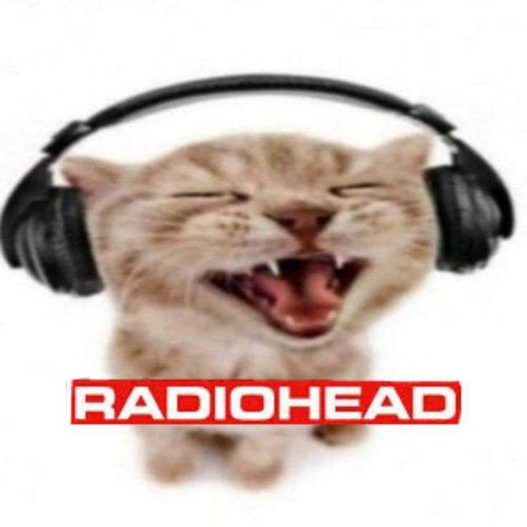
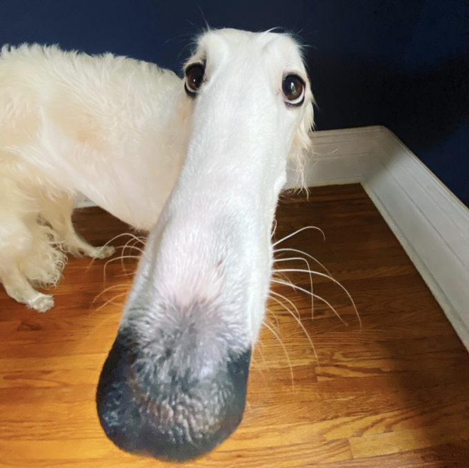
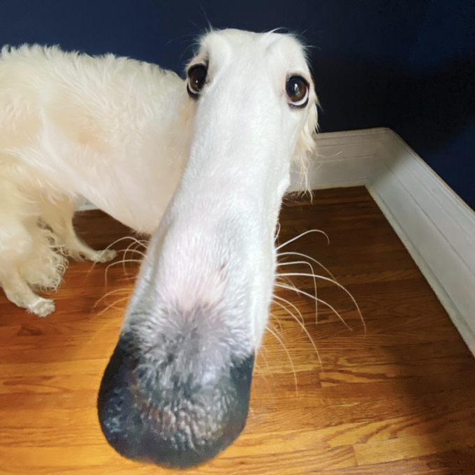

tunes
the uhhhhhh
TUNES!
I LOVE MY SILLY TUNES
silly little tunes
sunshine lollipops
 

lyrics
Man of War - Radiohead
Drift all you like, from ocean to ocean
i think this line is someone leaving someone behind in search of a new thing, drifting away. searching oceans to find this thing they're looking for.
Search the whole world
this line relates to the previous line for someone looking for something, or something else. never giving up looking for it.
But drunken confessions and hijacked affairs, will just make you more alone
this line is saying that the person searching for this thing is stupid, they're searching for something to make them less alone. but the lies they spread will not help them find this new thing
When you come home I'll bake you a cake
when the person finally stops searching for the thing that makes them less alone, they'll come home. and i'll be waiting, the thing they were searching for was to get away from me.
Made of all their eyes
this is getting revenge on all the people this person tried to replace me with.
I wish you could see me dressed for the kill
finally had enough
Weird Fishes - Radiohead
In the deepest ocean
The bottom of the sea
Your eyes
They turn me
Why should I stay here?
Why should I stay?
i think this is me being stuck at rock bottom with no hope, but i've been here before. borderline sucidal, why should i stay here? but then you came into my life. your eyes seduced me, but i would not fall for it so easily. why should i, when nothing else helped?
I'd be crazy not to follow
Follow where you lead
Your eyes
They turn me
Turn me on to phantoms (Way out)
I follow to the edge (Way Out)
Of the earth (Way out)
now that i have found you i feel i have a chance. i feel like i dont have to suffer anymore. i feel i can escape. your eyes haunt me. i will follow you where you lead me. even off the earth, whereever you go i will too.
And fall off
Yeah, everybody leaves (Way out)
If they get the chance (Way out)
And this (Way Out)
Is my chance
while i was so lost in your eyes, you lead me off the edge of the world. i fell further than i ever have. the love was fake. this is what happened everytime, this is what everyone does; they leave. they leave because i give them a chance. now it's my chance to leave. this is my way out.
I get eaten by the worms
And weird fishes
Picked over by the worms
And weird fishes
Weird fishes
Weird fishes
laying on the bottom of the earth that i fell off of. i have nothing, i have worms in my stomach eating me from inside. i have fishes poking at me from outside. why did you leave?
Yeah I
I'll hit the bottom
Hit the bottom and escape, escape
And I
I'll hit the bottom
Hit the bottom and escape, escape
drowning in pity. this happens everytime, but everytime i escape. everytime i make it and this time i will too.
Daydreaming - Radiohead
Dreamers
They never learn
They never learn
i have dreamt of a life with you.
i have loved you till the tips of the universe.
i have done everything in my power to make us work.
i tried it all.
i wont give up.
i will never learn.
Beyond the point
Of no return
Of no return
i can't leave now. i merged us in my mind. can't pull apart, won't pull apart. there's no return from this. there's no undoing how i feel. i will try everything i can. i will dream.
And it's too late
The damage is done
The damage is done
i've made my mistakes.
i've done wrong.
but however much i try it won't turn back.
i can't turn back time, i wish i could.
i can't undo the damage, i can't fix this.
but i will dream.
This goes
Beyond me
Beyond you
i can't feel what i feel. i can't know how you feel. i'm trying but i can't fix it. you can't fix it. i don't know what's wrong anymore.
The white room
By window
Where the sound comes through
my thoughts are served by the wind. how i feel is an illusion. my thoughts aren't mine. i am being fed them.
We are
Just happy to serve
Just happy to serve you
i know it won't work. i won't give up. i can't give up on you. i will happily keep trying. i will keep dreaming.